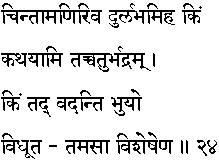
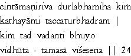

|

|
Verse 24 - Meaning:
Q: What (kim)is rare in this world (dur-labham iha) like the Chintaamani(a rare jewel referred to in Hindu scriptures which is supposed to be yielding one's wishes)?
A: I shall mention four auspicious entities (chatur - viseshena) in this respect, that being the view of enlightened men.
|